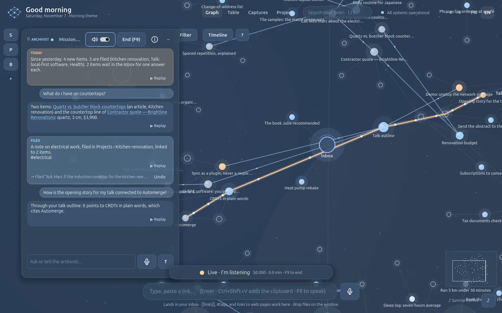
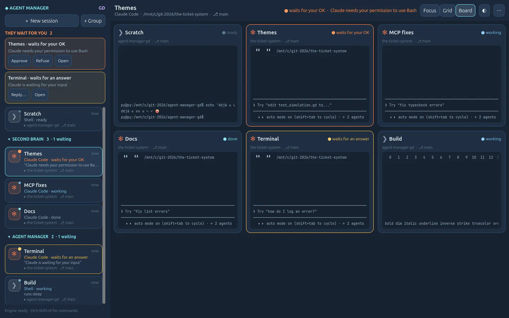
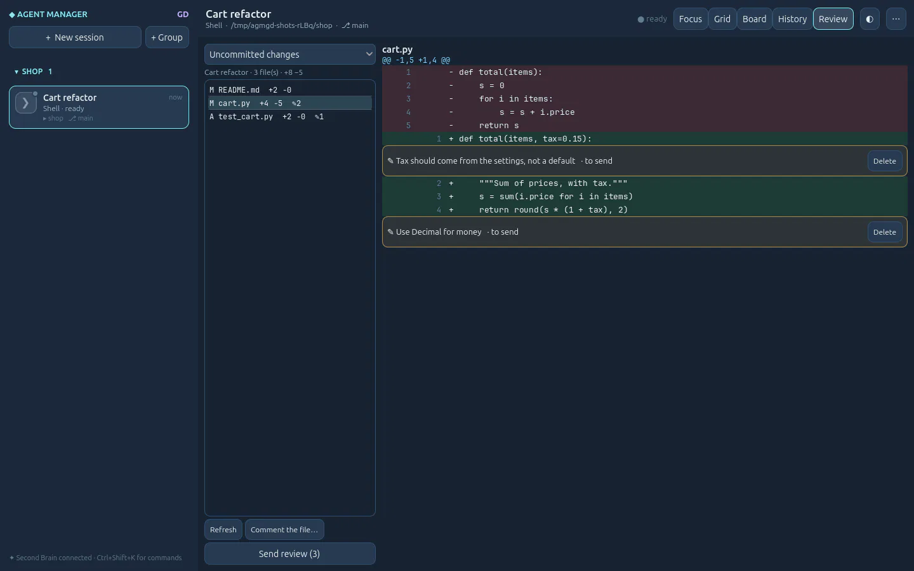
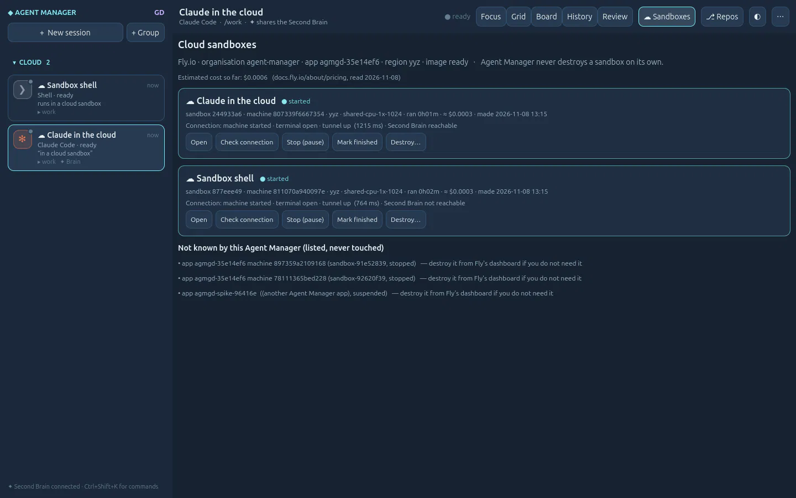
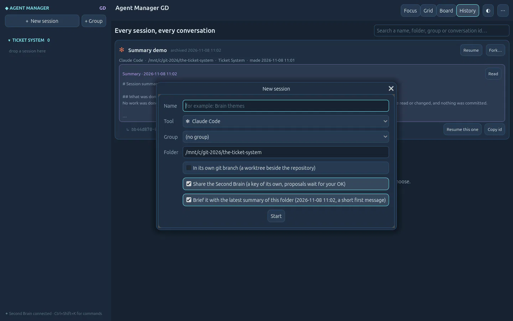

Desktop tools built with a game engine.
GD Project makes local-first apps in Godot: live, themable, and yours. A second brain that keeps what you know, a manager for your AI coding agents, and a wire between them so every agent starts from what you already learned.
 agent-manager-gd
agent-manager-gd
 second-brain-gd
second-brain-gd
Why build desktop tools in a game engine
A game engine redraws the screen many times a second and treats every pixel as yours. That is what a tool you live in all day needs.
Alive in real time
Agents change state, notes arrive, graphs move. The interface shows it as it happens, without a page reload or a spinner.
Our own rendering
Agent Manager draws its terminals itself, on Ghostty's terminal engine (libghostty-vt): accents, colour emoji, every text style and full-screen tools render right.
Themes all the way down
Fonts, colours and motion are ours to set. Both apps ship several built-in themes, from a calm focus look to a retro terminal.
Second Brain GD
Your second brain. Every AI agent. Your rules.
A second brain that lives on your computer and runs on AI. Speak, drop a file or send a web page: the Archivist agent files it for you, and every AI agent you use shares what you know.
- Voice first. Everything you can click, you can say.
- A living graph. Your notes, documents and pages as one map you can explore.
- MCP both ways. Claude Code, Codex, GitHub Copilot or Cursor can read your Brain and propose; you approve.
- Local-first. A SQLite file and a folder of originals in your user folder. Your own OpenAI key.



Agent Manager GD
Your AI coding agents, side by side.
Run Claude Code, Codex and a shell in real terminals inside one window. Sessions keep running when you close it, show what they are doing, and come back on their own conversation.
- Terminals that feel native. Ghostty's engine, our renderer, on Linux and on Windows.
- Nothing gets lost. Sessions live in tmux, conversations resume and fork, history keeps every summary.
- Who waits for you. States from the agents themselves; approve, refuse or reply from the queue, or by voice.
- Review before you merge. A branch per session, the diff with line comments sent back to the agent.
- Cloud sandboxes when you want them. A throw-away Fly.io machine per session, with a budget. Never destroyed on its own.



Better together: the context is never lost
On its own, each agent session starts from nothing and forgets everything when it ends. Connected to your Second Brain, every session starts from what you know and leaves something behind.
- Agent Manager
Start a session
Claude Code or Codex, in a folder or a connected repository. It gets its own Brain key, nothing shared.
- Second Brain
It searches what you know
Decisions, notes and documents from your Brain, while it works, through MCP.
- Second Brain
It proposes, you decide
What the agent learned arrives as a proposal, named after its session. Approve or reject it.
- Agent Manager
Wrap up
The agent writes what it did, what is left and how to continue. Kept in History and searchable.
- Both
The next one starts warm
A new session in the same folder is briefed with that summary and points to the Brain.


Open source, built in the open
Every app is a public repository under the MIT licence, with its devlog: each step, what was tested, what broke and how it was fixed.
The second brain: capture, graph, Archivist agent, MCP in and out.
Godot 4.7 · Python · SQLite sonixz/agent-manager-gdThe agent manager: terminals, sessions, review, voice, sandboxes.
Godot 4.7 · C++ (libghostty-vt) · Python · tmux sonixz/gd-projectThis site. Plain HTML and CSS, no build step.
HTML · CSS